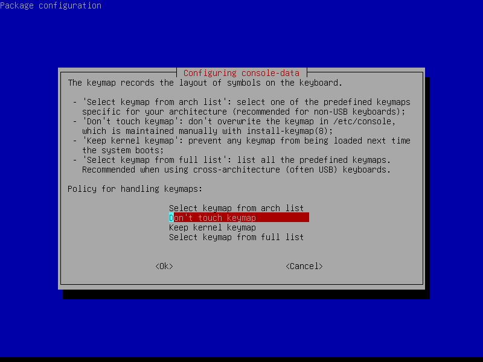
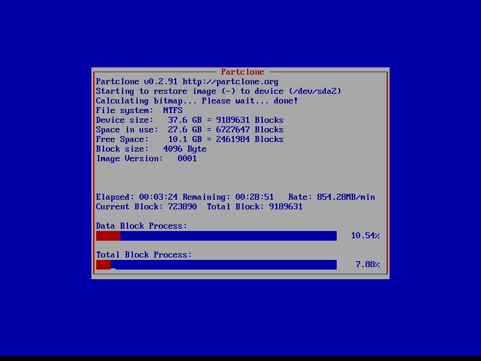

Clonezilla. Инструкция на русском
AnyKey • 11.02.2018 • 4 комментария
Скачиваем образ загрузочного диска Clonezilla с официального сайта или если сомневаетесь в том, какой именно вариант выбрать, то напрямую отсюда.
Записываем этот образ на компакт-диск или создаем загрузочную флешку.
Создание образа раздела или всего жесткого диска целиком.
Загружаемся с только что созданного компакт-диска или флешки.
Жмем Enter или ждем полминуты.
Лучше нажать Enter, т.к. при выборе русского часто отображаются кракозябры.

Enter
Enter
В данном случае мы хотим сделать образ раздела или диска, поэтому жмем Enter
Т.к. мы работаем с локальными, а не сетевыми устройствами, то жмем Enter
Тут написано, что если Вы хотите сохранить образ на USB-устройство, то подключите его, подождите около 5 секунд и нажмите Enter, если же нет, то нажмите Enter прямо сейчас.
Вы все еще можете успеть подключить USB-устройство, на которое планируете сохранить образ. После того, как подключите USB-устройство, дождитесь, пока оно не появится в списке, после чего жмите Ctrl+C, если же Вы ничего не планируете подключать, то жмите Ctrl+C сразу.
Здесь нам предлагают выбрать раздел, на который будет сохранен образ раздела или диска. Стрелками вверх-вниз выбираем нужный раздел, после чего жмем Enter
Здесь нам предлагают выбрать папку (директорию), в которую будет сохранен образ. Я рекомендую сохранять образ в корень диска, при необходимости его потом можно будет переместить в любую папку. Поэтому два раза жмем на Tab, чтобы выбрать пункт Done и жмем Enter
В данном окне нам сообщают, сколько места осталось на выбранном разделе. Жмем Enter
Выбираем режим работы Clonezilla. Если Вы читаете эту инструкцию, то однозначно Ваш уровень - Beginner, соответственно жмем Enter
Здесь мы выбираем действие, которое хотим совершить. Первый пункт - сохранить весь диск целиком, второй пункт - сохранить раздел, третий пункт - восстановить диск из образа, четвертый пункт - восстановить раздел из образа. Далее углубляться в рамках данной статьи мы не будем. Пока нас интересует сохранение диска или раздела, поэтому выбираем первый или второй пункт соответственно и жмем Enter
Теперь необходимо ввести название образа, но можно оставить и так, как есть, поэтому просто жмем Enter
Здесь необходимо выбрать образ какого диска или раздела мы хотим создать. Как правило первый раздел, это загрузочный раздел Windows объемом от 100 до 500 МБ и он нам мало интересен, поэтому жмем кнопку вниз, потом жмем пробел, чтоб поставить звездочку напротив интересующего нас раздела. И снова Enter
Здесь спрашивают, будем ли мы проверять файловую систему, образ которой хотим создать. Если мы создаем образ Windows, то файловую систему лучше не проверять, поэтому жмем Enter
Теперь необходимо определиться, будем ли мы проверять созданный образ. Если Вы сильно торопитесь, то выберите второй пункт, но я все же рекомендовал бы оставить выбранным первый пункт, поэтому просто жмем Enter
В данном пункте возникает вопрос - будем ли мы шифровать создаваемый образ. Если на диске или разделе, образ которого мы создаем нет никаких секретных данных, то лучше образ не шифровать, поэтому сразу жмем Enter
Выбираем, что необходимо сделать после создания образа:
1) отложить решение данного вопроса до окончания создания образа;
2) перезагрузить компьютер;
3) выключить компьютер.
Лично мне больше нравится последний вариант, поэтому выбираем его и жмем Enter

Enter
Жмем Y (в английской раскладке), после чего - Enter
Теперь мы наблюдаем вот такое окно на протяжении нескольких минут или часов - всё зависит от объема раздела и скорости жесткого диска.
Жмем Enter и ждем пока компьютер выключится.
Всё, создание образа раздела или жесткого диска завершено.
Восстановление раздела или диска из ранее созданного образа.
Загружаемся с ранее созданного компакт-диска или флешки.
Жмем Enter или ждем полминуты.
Лучше нажать Enter, т.к. при выборе русского часто отображаются кракозябры.
Enter
Enter
В данном случае мы хотим восстановить раздел или диск из ранее созданного образа, поэтому жмем Enter
Т.к. мы работаем с локальными, а не сетевыми устройствами, то жмем Enter
Тут написано, что если Вы хотите восстановить образ с USB-устройства, то подключите его, подождите около 5 секунд и нажмите Enter, если же нет, то нажмите Enter прямо сейчас.
Вы все еще можете успеть подключить USB-устройство, с которого планируете восстановить образ. После того, как подключите USB-устройство, дождитесь, пока оно не появится в списке, после чего жмите Ctrl+C, если же Вы ничего не планируете подключать, то жмите Ctrl+C сразу.
Здесь нам предлагают выбрать раздел, на котором хранится ранее созданный образ раздела или диска. Стрелками вверх-вниз выбираем нужный раздел, после чего жмем Enter
Здесь нам предлагают выбрать директорию, в которой хранится образ, созданный ранее. Если вы не вводили свое имя при создании образа, то по умолчанию имя образа имеет вид 2018-04-02-21-img, где 2018 - год создания образа, 04 - месяц, 02 - день, 21 - час. Если в данной директории мы видим наш образ, то нажимаем Tab пока надпись Done не станет красной, затем жмем Enter
Enter

Выбираем режим работы Clonezilla. Если Вы читаете это описание, то однозначно Ваш уровень - Beginner, соответственно жмем Enter
Здесь мы выбираем действие, которое хотим совершить. Третий пункт - восстановить диск из образа, четвертый пункт - восстановить раздел. Далее углубляться в рамках данной статьи мы не будем. Пока нас интересует восстановление диска или раздела, поэтому выбираем третий или четвертый пункт соответственно и жмем Enter
Здесь нас просят выбрать образ, из которого будем восстанавливать диск или раздел. Стрелками вверх и вниз выбираем нужный образ и жмем Enter
Enter
Выбираем раздел, на который будем восстанавливать образ. Как правило это второй раздел, а первый раздел объемом всего от 100 до 500 МБ - загрузочный раздел Windows. Жмем Enter
Здесь нас спрашивают, будем ли мы проверять образ, перед тем, как восстанавливать его на раздел или диск. Первый пункт - проверять, второй, соответственно - не проверять. На мой взгляд, лучше все же проверить. Поэтому оставляем выделенным первый пункт и жмем Enter
Выбираем, что необходимо сделать после восстановления из образа:
1) отложить решение данного вопроса до окончания восстановления из образа;
2) перезагрузить компьютер;
3) выключить компьютер.
Лично мне больше нравится последний вариант, поэтому выбираем его и жмем Enter.
Enter
Ждем несколько минут или часов, пока не завершится проверка целостности образа.
Enter
Y в английской раскладке, затем Enter
Y в английской раскладке, затем Enter

Теперь ждем, пока не завершится процесс восстановления.
На этом этапе привод выплюнет диск (если Вы загружались с флешки, то ничего не произойдет). Вытаскиваем диск и жмем Enter. Компьютер выключится. Процесс восстановления завершен.
Возможные проблемы и способы их решения.
При попытке сделать образ раздела выскочило сообщение об ошибке:
this disk contains mismatched GPT and MBR partition: /dev/sda
В таком случае надо перейти в режим командной строки и выполнить две команды
sgdisk -z /dev/sda
затем
reboot
После чего компьютер перезагрузится и можно будет успешно создать образ.
При попытке создать образ Windows 8 или Windows 10 может возникнуть ошибка
The image repository directory is read-only, not writable: /home/partimag
Проблема возникает из-за того, что когда мы выключаем компьютер с Windows 8 или Windows 10 обычным способом, то он не выключается, как положено, а переходит в режим так называемой "быстрой загрузки", а для того, чтобы выключить компьютер с Windows 8 или Windows 10 как положено, необходимо удерживать клавишу Shift, во время нажатия на кнопку "Завершить работу".
Продолжение следует... Может быть ) Опубликовано в Прочее 11.02.2018 автором AnyKey.